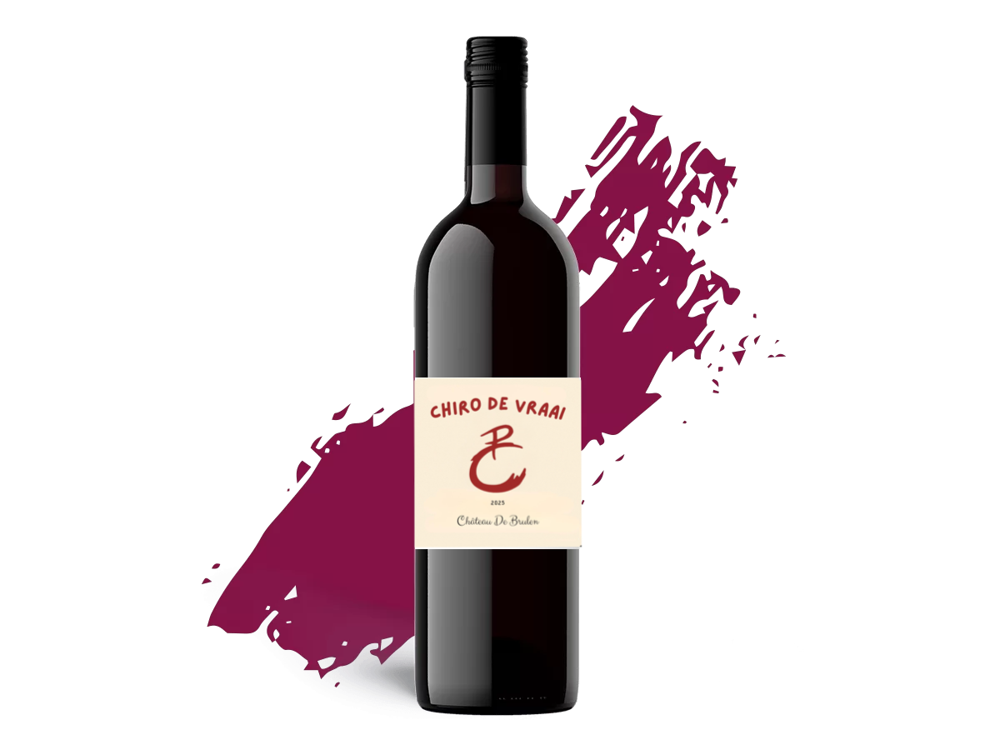
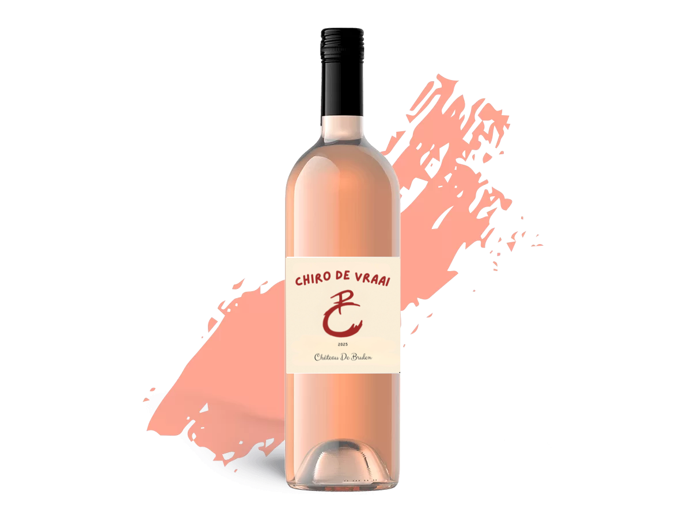

🎄 Wijnverkoop Chiro De Vraai 🎄
Ons Wijnassortiment
Hieronder vind je een overzicht van de wijnen die we aanbieden tijdens onze verkoopactie. We hebben voor elk wat wils: wit, rood en rosé.
Château De Brulen Rood
Deze rode wijn is zorgvuldig uitgekozen door ons team van wijnkenners. Hij combineert perfect met traditionele vleesgerechten, rijke stoofpotjes of een goed gevulde kaasplank. Een ideale keuze voor een hartige maaltijd tijdens de feestdagen!
Bestel deze wijnChâteau De Brulen Wit
Deze Pays d'Oc Chardonnay geurt naar rijp wit fruit en bloemen. Hij houdt perfect de balans tussen zuurgraad en moelleux en heeft een lichte minerale afdronk. Heerlijk bij vis, kip, pasta met roomsaus of een frisse salade. Deze witte wijn maakt elk kerstmenu stijlvol en compleet!
Bestel deze wijnChâteau De Brulen Rosé
Een zomerse rosé uit Frankrijk met toetsen van rode bessen. De fruitige aroma's zetten zich voort in de mond en laten een aangename, zachte sensatie achter in de afdronk. Deze rosé is ideaal bij aperitiefhapjes, lichtere gerechten of een frisse salade. Ook bij een zacht, fruitig dessert komt hij mooi tot zijn recht. Hij is een graag geziene gast tijdens winterse feestavonden.
Bestel deze wijn